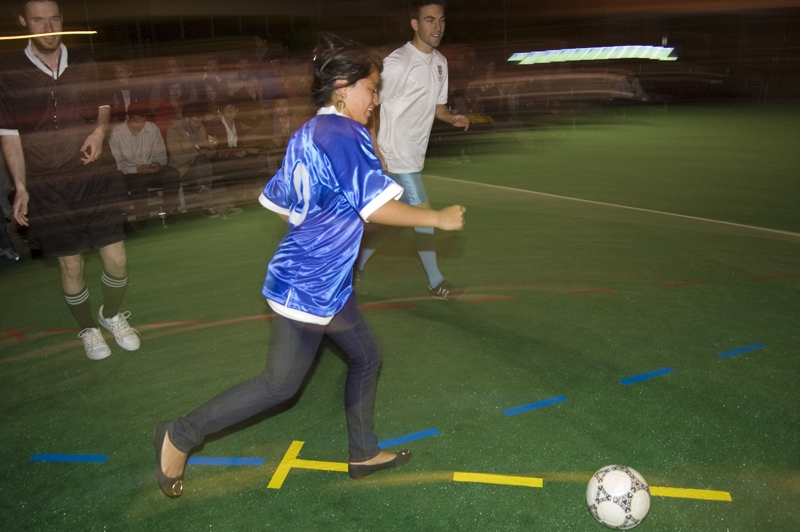
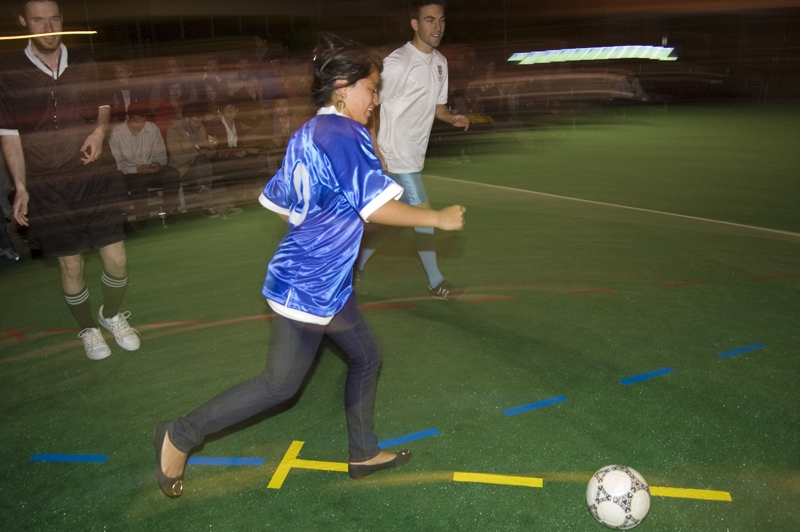

Knifeandfork (Brian House and Sue Huang) hosts a carefully choreographed, repeating reenactment of the infamous “Hand of God” soccer goal from the 1986 FIFA World Cup restaged on MOCA’s Sculpture Plaza.
Audience members have the opportunity to play the role of Diego Maradona, the Argentine soccer legend who scored the illegal but unpenalized goal against England during the quarterfinals. The possibility of a “perfect” performance inevitably remains elusive—rather, the repetitions serve as a form of kinetic documentation, both of what was and what might have been, and they grant the audience agency over the representation of this iconic event which has been otherwise ossified by media reproduction. TVs throughout the museum show the event as it is remade.